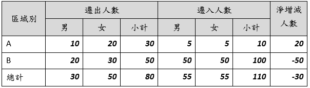
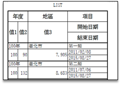

資料表格
UdeReport 中的 TableMetadata，目前簡單區分為樹狀與巢狀兩種定義方式。
- 樹狀 (TreeTableMetadata)
即一般常見的直欄報表型式，具階層關係的標題列顯示在最上方。除統計值外，每筆資料只佔一列空間；也就是只有標題列葉節點所對應的資料欄位會被顯示。 同一列之間的欄位可能有相依關係，如相加、相減。所有資料也可能依其它欄位做分組統計。如下表即是一個典型範例。

- 巢狀 (NestTableMetadata)
當一筆資料需要用多列空間才足以輸出完整內容時，即可以巢狀表格定義。典型的應用如人員清冊資料，因為許多欄位內容像地址，即需要完整的一列空間才足以顯示。
